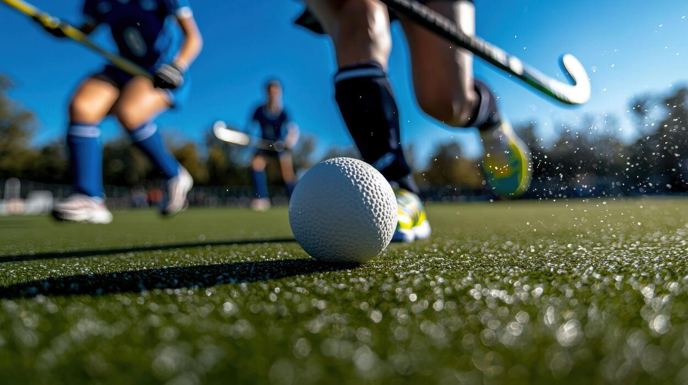
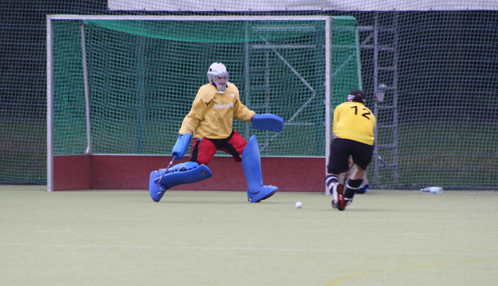
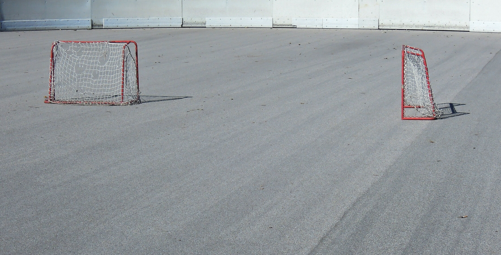
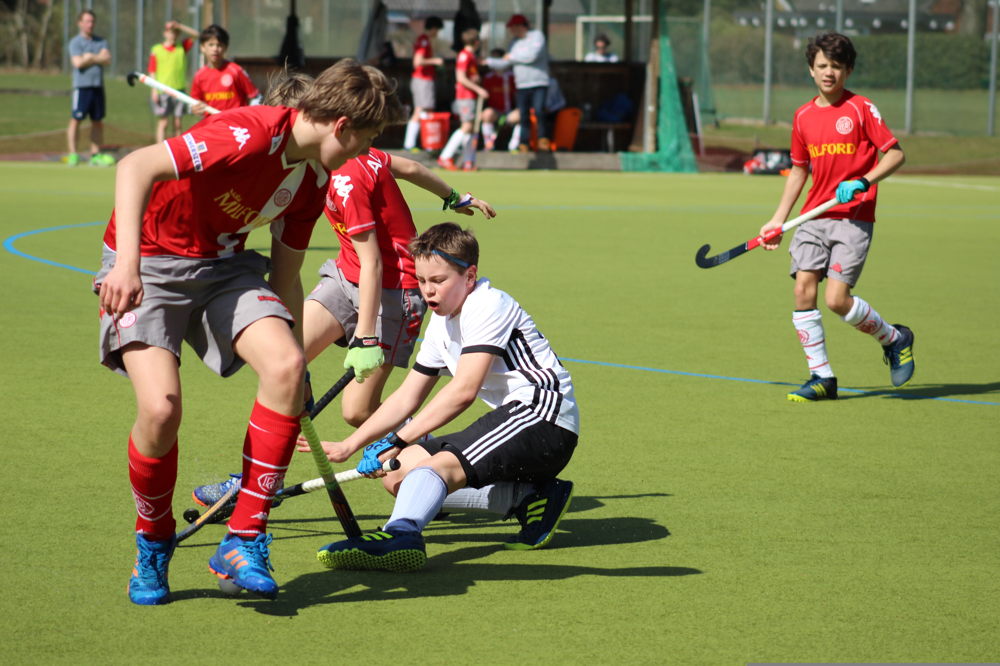

The basics
How to Play
Two teams use hooked sticks to pass, dribble and shoot a hard ball into the opposing goal. International matches have 11 players per team and are played in four 15-minute quarters.
- Use the flat side of the stick to play the ball.
- Only the goalkeeper may use their body to stop the ball inside the circle.
- A goal counts when an attacker plays the ball from inside the shooting circle.

Ready for the pitch
Equipment
Players need a stick designed for field hockey, a hard ball and protective gear. The stick has a flat playing side and a rounded side, so players learn to control the ball with the flat face.
- Stick and ball
- Shin guards and a mouthguard
- Goalkeepers wear extra padding, gloves, leg guards and a helmet

Teamwork in action
More About the Game
Field hockey is a fast team sport where quick passing and smart movement create space to attack. Teams work together in three broad areas:
- Forwards create chances and take shots.
- Midfielders connect the attack with the defence.
- Defenders protect their circle and help start attacks.
There is no offside rule, so timing and communication matter across the whole pitch.

Quick facts
Field Hockey Facts
- 11 players per team are on the field in a standard outdoor match, including the goalkeeper.
- Four quarters of 15 minutes make up a standard international match.
- One shooting circle in front of each goal is where a field goal must be played from.